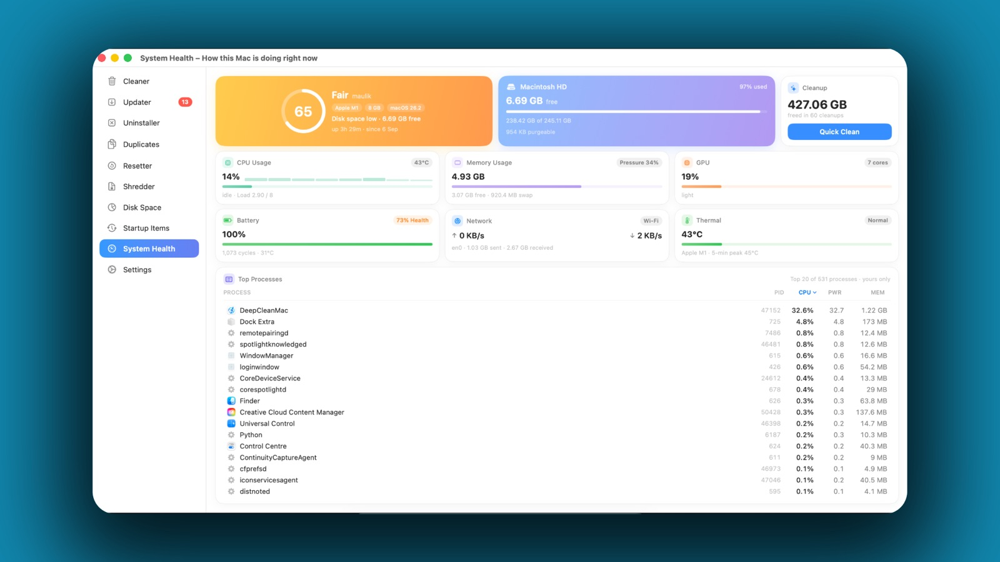
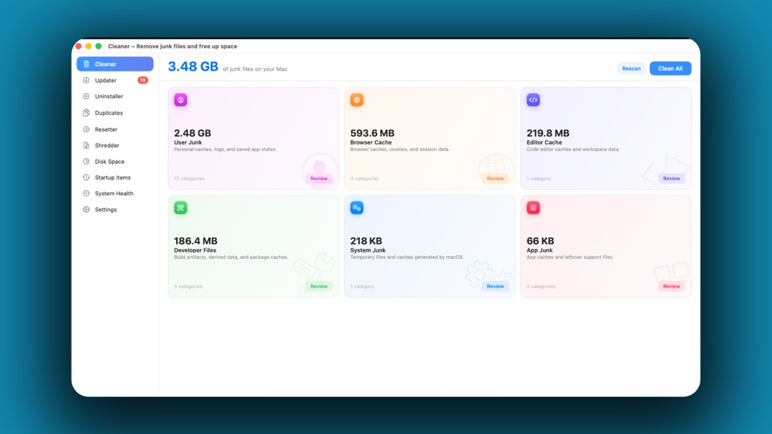
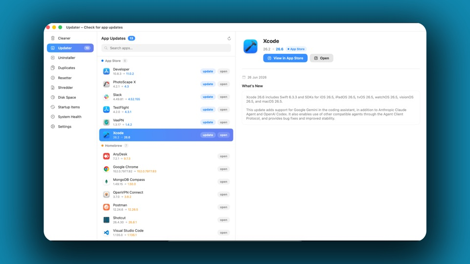
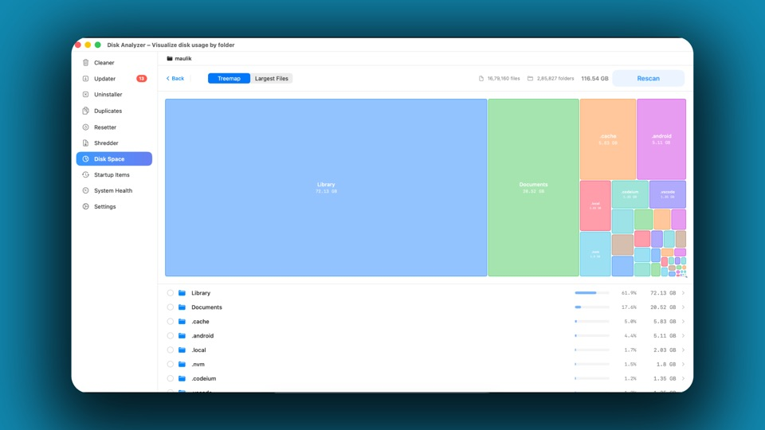
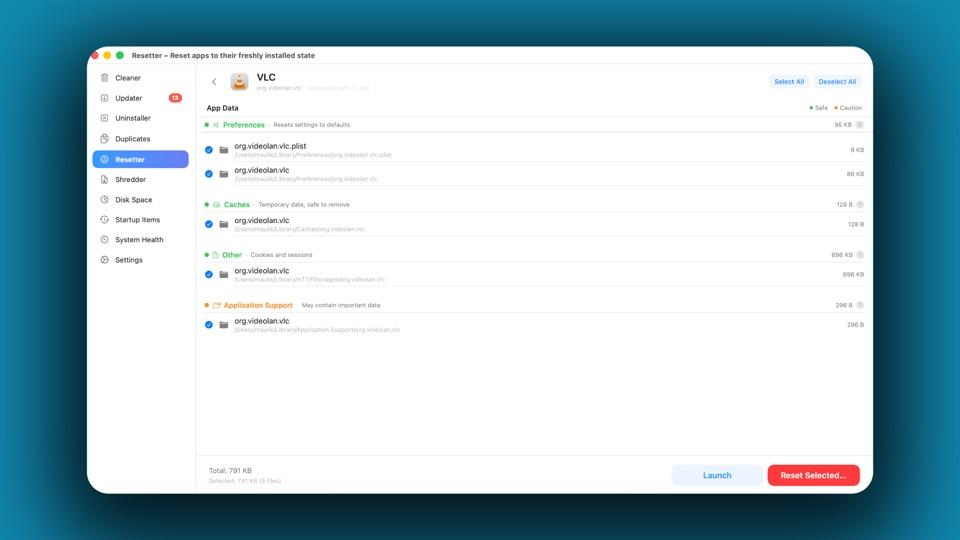
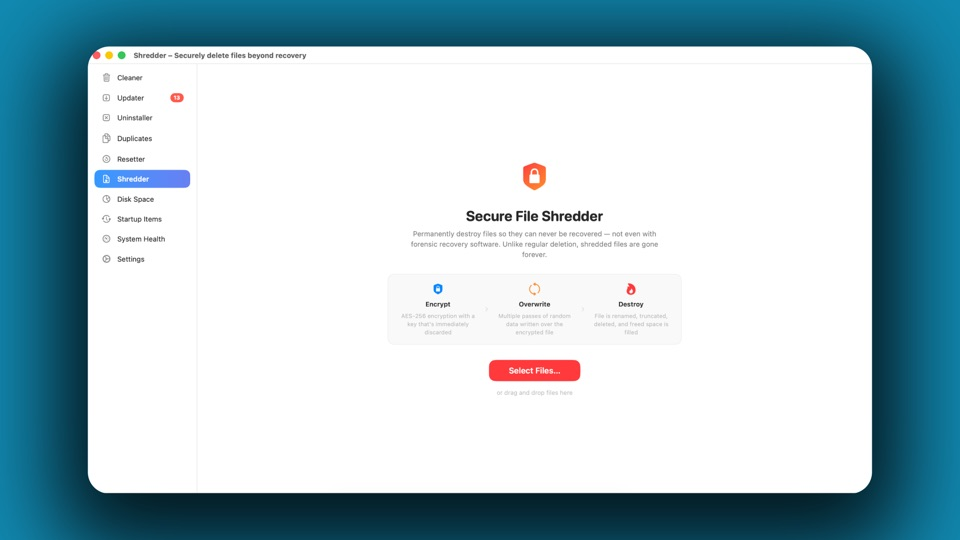

Reclaim disk space.
Keep your Mac organized.
A native macOS utility for finding unnecessary files, managing applications, identifying duplicates and understanding storage usage.
Download for Mac
Eight tools in one app
Clean, update, uninstall, find duplicates, reset, shred, analyze disk usage and monitor resources.

Smart Cleanup
Find supported caches, logs, temp files and app leftovers across 200+ locations. Review the results before anything is removed.

App Uninstaller
Remove apps along with leftover preferences, caches, containers and support files. You choose which files are removed.

App Updater
Check for updates to apps from the App Store, Homebrew or Sparkle, all in one list.

Duplicate Finder
Find identical files by comparing their content, then choose which copies to keep.

Disk Space Analyzer
Explore what's using your disk with an interactive treemap and find large files.

App Resetter
Reset supported apps to their default state without reinstalling.

File Shredder
Remove selected sensitive files using encryption with a discarded key and overwrite passes.
System Monitor
View real-time CPU, memory and disk usage and the processes using the most resources.
Install & activate
Takes about a minute.
- Download DeepCleanMac.dmg, open it and drag DeepCleanMac into your Applications folder.
- Launch DeepCleanMac from Applications. If macOS asks to confirm an app downloaded from the internet, click Open.
- Click Grant Access… on the Full Disk Access banner, then turn on DeepCleanMac in System Settings › Privacy & Security › Full Disk Access.
- Open Settings › License, paste your license key and click Activate. One license activates one Mac.
Moving to a new Mac? Settings › License › Deactivate, then activate on the new one.
Some system-level cleaning asks for your administrator password. That prompt comes from macOS.